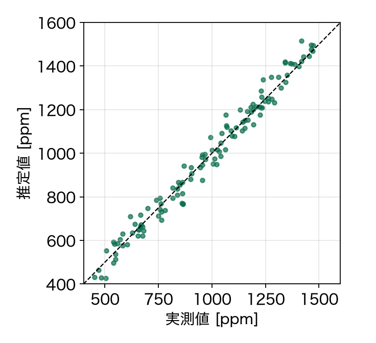
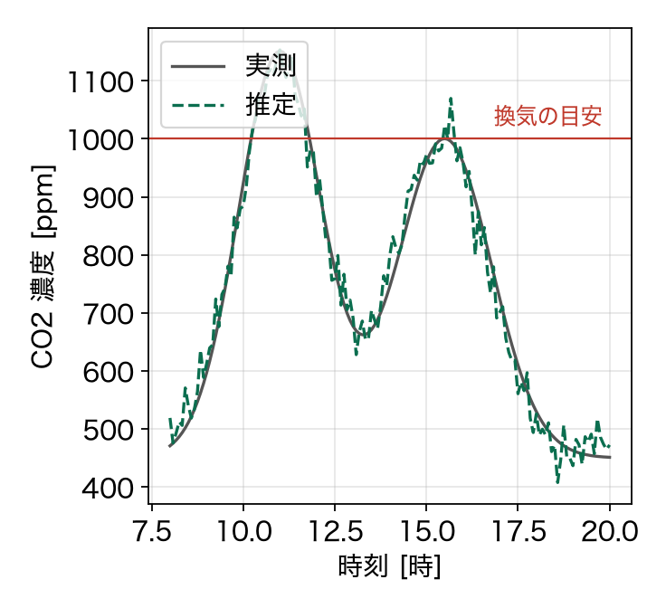

小型センサの値から
室内の CO2 濃度を推定する手法
室内の CO2 濃度を推定する手法
Example Conference 2026
Taro Example, Hanako Sample（Example University）
Taro Example, Hanako Sample（Example University）
背景と目的
安価なセンサでも，換気の判断に使える精度で CO2 濃度を知りたい
- 高い精度の CO2 計は，1 台数万円と高価 [1]
- 温度・湿度・人数は，安価なセンサで測れる [2]
- 目的：これらの値から，誤差 50 ppm 以下で濃度を推定する
[1] A. Author, Example Journal of Buildings, vol. 3, 2024. [2] B. Author, Example Sensors Letters, 2025.
提案法
直前の濃度と入力から，次の時刻の濃度を予測する
$\displaystyle \hat{c}_{t+1} = c_t + \frac{\Delta t}{V} \left( g\, n_t - q_t \left( c_t - c_{\rm out} \right) \right)$(1)
| $c_t$ | 時刻 $t$ の濃度 | $V$ | 部屋の体積 | $n_t$ | 部屋にいる人数 |
| $q_t$ | 換気量（温度・湿度から推定） | $g$ | 1 人あたりの発生量 | $c_{\rm out}$ | 外気の濃度 |
推定結果
平均の誤差は 38 ppm で，目標の 50 ppm を下回った

図 1 推定値と実測値（3 部屋・14 日）

図 2 1 日の濃度の変化（部屋 A）
データはすべて架空
まとめと今後
安価なセンサの値から，平均 38 ppm の誤差で濃度を推定できた
- 式 (1) の換気量を，温度・湿度の変化から推定した
- 窓を開けた直後は，換気量の変化に追いつかず誤差が大きい
- 今後：広さの違う部屋と，季節を変えての検証